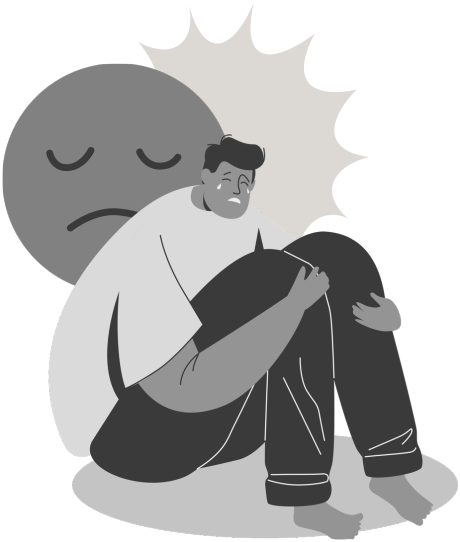
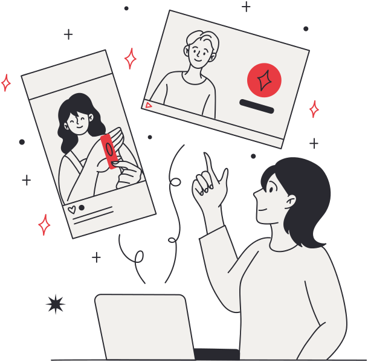
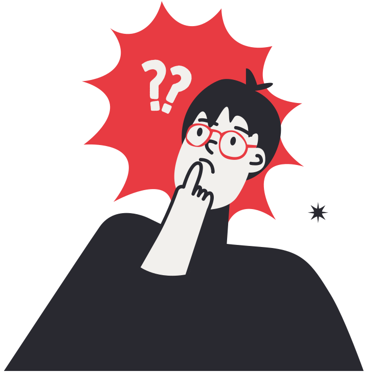
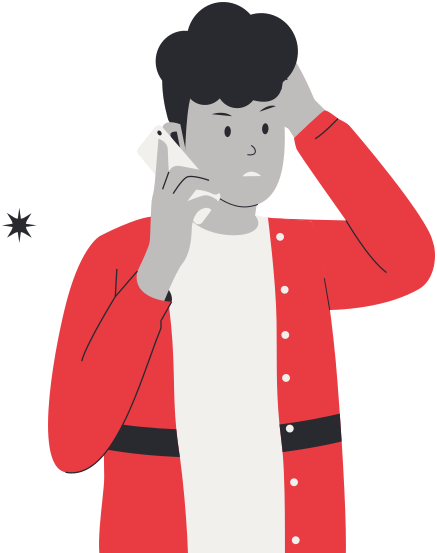

Cyber bullying
Respeito, liberdade e responsabilidade no mundo digital.
Integrantes
Gabriela, Heitor e MiguelÉtica nas redes sociais
Cyberbullying é a violência praticada pela internet, com mensagens, comentários e publicações que humilham, ameaçam ou perseguem alguém.
Tipos de cyberbullying

Consequências do cyberbullying
As agressões podem afetar cada pessoa de um jeito. Alguns impactos possíveis:
Emocionais
Ansiedade, tristeza, medo e baixa autoestima.
Sociais
Isolamento, afastamento das redes e dificuldade de confiar nas pessoas.
Escolares
O bem-estar abalado pode prejudicar o desempenho na escola.
Liberdade de expressão e respeito
Ter liberdade significa poder agir sem considerar os outros?
Respeitando os limites
- Discordar sem ofender.
- Respeitar opiniões diferentes.
- Evitar comentários discriminatórios.
- Não incentivar violência ou ódio.
Liberdade vem junto com responsabilidade.
Qual é a diferença entre discordar e humilhar?
Critica a ideia. A conversa continua.
Ataca a pessoa. A conversa acaba.
Conversas fictícias, criadas para este trabalho.
Notícias falsas e desinformação
O que são: informações falsas ou manipuladas que enganam e se espalham.
Perigos: prejudicam reputações, causam medo e influenciam decisões importantes.
Antes de compartilhar, confira
Cada compartilhamento leva o boato mais longe, e ele atinge pessoas reais.
Privacidade e responsabilidade digital
Proteger os meus dados e respeitar os dados dos outros fazem parte da mesma atitude.
Entregar prints como prova a responsáveis, à escola ou às autoridades é diferente de expor alguém nas redes.


Como agir diante do cyberbullying?
Quem sofre ou presencia pode agir. E ninguém precisa fazer isso sozinho.
Preservar provas
Prints com data, link e nome do perfil.
Bloquear e denunciar
Usando as ferramentas da própria plataforma.
Buscar apoio
Conversar com alguém de confiança.
Não alimentar provocações não significa ficar em silêncio: significa levar o caso a quem pode ajudar.
Se não deu para interromper, a culpa não é de quem sofreu. Quem presencia também pode não curtir, não repassar e apoiar.
Consequências legais Lei nº 14.811/2024
O que mudou
Incluiu no Código Penal o crime de intimidação sistemática (bullying) e a sua forma virtual, o cyberbullying (art. 146-A).
Responsabilidade digital
A internet não é um espaço sem regras. Ameaças, discriminação e divulgação indevida de conteúdos podem gerar consequências legais.
Menores de idade não seguem o mesmo regime penal dos adultos: adolescentes respondem conforme o Estatuto da Criança e do Adolescente (ECA).
Cada caso é único. O resultado depende da análise das autoridades e da Justiça.

Onde buscar ajuda?
Você não está sozinho.
Para pensar
Como respeitar a dignidade de alguém mesmo quando discordamos?Obrigado
Integrantes
Gabriela, Heitor e Miguel